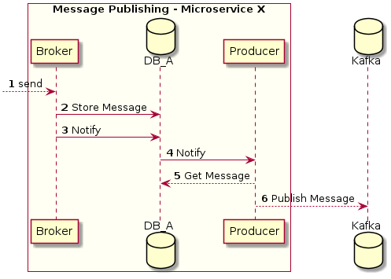
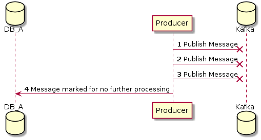
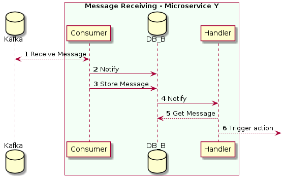

Messaging¶
Introduction¶
The message is the minimum unit of communication between different actors or the same. An message is a change in state, or an update, like an item being placed in a shopping cart on an e-commerce website. Messages can either carry the state (the item purchased, its price, and a delivery address) or messages can be identifiers (a notification that an order was shipped).
The general operation of the messages (Events, Commands and Command Replies) is as follows:
![@startuml
box "Message Publishing - Microservice X" #FFFFF3
participant Broker
database DB_A
participant Producer
end box
database Kafka
box "Message Receiving - Microservice Y" #F3FFF6
participant Consumer
database DB_B
participant Handler
end box
autonumber
--> Broker: send
Broker -> DB_A: Store Message
Broker -> DB_A: Notify
DB_A -> Producer: Notify
Producer --> DB_A: Get Message
Producer --> Kafka: Publish Message
Kafka <--> Consumer: Receive Message
Consumer -> DB_B: Notify
Consumer -> DB_B: Store Message
DB_B -> Handler: Notify
Handler --> DB_B: Get Message
Handler --> :Trigger action
@enduml](../_images/plantuml-e7fd3080761e9946506b9572d7041764081f05ee.png)
Messages are stored in a PostgreSQL database before being sent to Kafka. This plays an important role as it allows messages to be transactional and fault tolerant (network errors, Kafka crashes…).
Once the messages are successfully published in Kafka, they are removed from PostgreSQL and a notification is sent (using PostgreSQL LISTEN / NOTIFY ) to consumers so that they can consume it. (As you can see, this is done in a reactive way so that there does not have to be a periodic background process that checks every x seconds for new messages for example. This reduces the overall consumption of each microservice).
Message Publishing¶
Before the message is finally published in Kafka, it goes through a series of operations involving the following actors, which are necessary to know before going deeper into the flow:
Broker: In charge of storing the received message in the database and launching a NOTIFY.
Database: It is the database where the message is stored to preserve transactionality and to be tolerant to system failures.
Producer: It is in charge of LISTENING for new messages in the database and publishing them in Kafka.
Now that we know the components involved, let’s look at the complete flow:

The Broker receive the message and add it to the database. Then trigger notify action to the database.
The
Producerlistens to new messagesThe Producer is actively listening for new messages using the following SQL:
LISTEN producer_queue
The
Produceris notified of new messagesThe producer reads from the database table (mentioned in step 1) obtaining the new messages.
The
Producerpublishes the messages inKafkaThe message have several attempts to be stored in the database (parameterizable). As an example, we set the number of retries to 3, if on the third attempt the message is not published to the Kafka, it is marked to not be processed any more times.

If the message has been published, it is deleted
The
producertakes care of deleting the message from the local database once it has been successfully published in Kafka.
Message Receiving¶
Once the message is in Kafka, it can be consumed by the services that need it. There are several processes for receiving the message from Kafka to trigger an action.
The components that must be known beforehand are:
Consumer: It is in charge of obtaining the message from Kafka and storing it in the database.
Database: It is the database where the message is stored to preserve transactionality and to be tolerant to system failures.
Handler: It is responsible of triggering the final action (calling the function that is subscribed to the message for example).
Now that we know the components involved, let’s look at the complete flow:

The
Consumersubscribes to Kafka and get new messagesThe
Consumersubscribes toKafkaand is responsible for receiving new messages.The received message is stored in the
PostgreSQLdatabase of the corresponding microservice. The table where the message is stored has the following structure:CREATE TABLE IF NOT EXISTS consumer_queue ( id BIGSERIAL NOT NULL PRIMARY KEY, topic VARCHAR(255) NOT NULL, partition INTEGER, data BYTEA NOT NULL, retry INTEGER NOT NULL DEFAULT 0, created_at TIMESTAMPTZ NOT NULL DEFAULT NOW(), updated_at TIMESTAMPTZ NOT NULL DEFAULT NOW())
The
Consumertrigger notify action to the databaseThe
Consumertriggers a notification to let theHandlerknow that new messages are available.NOTIFY consumer_queue
The Handler listens to new messages and reads from the database table (mentioned in step 1) obtaining the new messages. The
Handlerreads from the database table (mentioned in step 1) obtaining the new messages.Final action is triggered and the message have several attempts to be consumed in the database (parameterizable). If it exhausts the attempts, it is flagged in the database for no further processing.

Finally, If the message has been published, it is deleted
Event¶
An Event is a change in an Aggregate, so is composed of:
AggregateDiffclass:Topic: Is the name of the action. Example:
OrderCreated,OrderUpdated,OrderDeleted…
Command¶
The commands have the necessary arguments to execute the command (i.e. the Request.content) as well as the identifier of the response topic (where the result has to be sent).
Command Reply¶
Command replies are the response of the command execution itself, they have with them the response itself, and a status code, so that whoever sent the command knows if the execution failed and if so why.
Commands and their responses include the identifier of the saga they are being executed on.